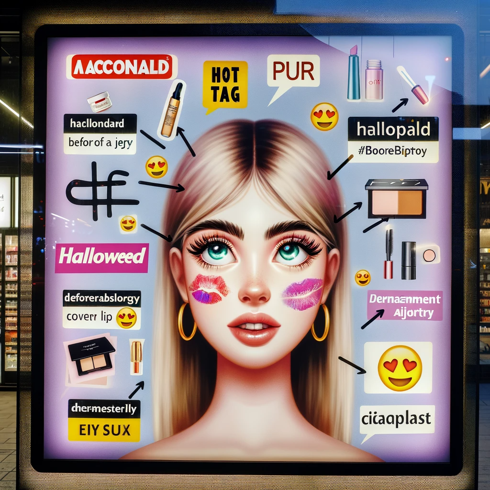

Conclusion
In conclusion, achieving the status of a Key Opinion Leader (KOL) in the Reddit MakeupAddiction subreddit involves a complex, multifaceted approach. This begins with leveraging Natural Language Processing (NLP) to gain deep insights into the community's culture and dynamics. Our extensive NLP analysis has unearthed key strategies essential for aspiring KOLs. Central to this strategy is the ability to align with the community's trending conversations. Skillful utilization of "hot tags" and "hot words," identified through NLP, enables the creation of content that resonates emotionally with the community. Maintaining a balance between projecting a unique voice and mirroring the community's current interests is crucial in ensuring effective engagement.
The second critical step in establishing oneself as a KOL involves building authority through strategic brand alignment. Our analysis provides a curated selection of brands and products that have generated significant discussion within the subreddit. By forming partnerships with these brands and sharing expertise on popular cosmetics and skincare products, KOLs can position themselves as trusted advisors. This strategy not only builds credibility but also establishes the KOL’s reputation as a source of valuable and relevant advice, enhancing their standing within the community.
Furthermore, crafting engaging narratives that reflect the community's sentiment is an essential aspect of a KOL's role. This involves more than just sharing information; it requires a deep understanding of the community's experiences, challenges, and aspirations. By creating content that fosters deeper connections and promotes meaningful engagement, a KOL can solidify their place within the subreddit. The table before you is a vibrant gateway to becoming a Key Opinion Leader (KOL) in this subreddit. Each keyword is a beacon, guiding your content strategy towards community resonance and influence—your first step on the path to KOL eminence begins here.
Additionally, the journey to KOL eminence is aided by the strategic use of machine learning insights. Understanding the factors that influence a post’s popularity, such as the number of likes and comments it receives, is key to this process. KOLs should focus on creating positive, uncontroversial content to avoid the risk of post deletions or bans, which can hinder market development. Regular and quality interactions, including posting insightful content and actively engaging in comments, are pivotal in expanding a KOL's influence and fan base.
Lastly, successful KOLs leverage predictive analytics to stay ahead of trends. Identifying and capitalizing on 'hot tags' likely to gain traction in the coming quarters can position a KOL as a visionary thought leader within the community. By combining strategic foresight, active community participation, and the judicious use of machine learning insights, KOLs can elevate their influence and secure a respected position within the vibrant MakeupAddiction online ecosystem.
Future Work
In our future NLP work, we intend to implement a dual-track approach. The initial track will concentrate on real-time analytics within the "MakeupAddiction" subreddit. This involves employing sophisticated data analysis tools to continuously track popular tags and keywords, while also monitoring the emotional trends associated with these keywords. This real-time insight will aid Key Opinion Leaders (KOLs) in timely expression of emotional opinions, assist KOLs and marketers in identifying and leveraging emerging trends, and ensure the creation of content that aligns with current user interests.
The second track will delve into sentiment analysis concerning brands and products in the cosmetics and skincare industry. Our aim is to uncover potential consumer emotions towards various makeup and skincare brands and products, guiding KOLs in making informed strategic decisions for collaborations and product positioning with different brands. We also plan to consistently identify the most influential and positively perceived KOLs for potential brand partnerships. This comprehensive analysis will aid in formulating the most effective cooperation and marketing strategies, ultimately maximizing business value and enhancing user engagement on the platform.
In our upcoming machine learning projects, we aim to significantly advance our popular tag prediction model, focusing on achieving real-time predictive capabilities. This development is set to revolutionize how potential Key Opinion Leaders (KOLs) and brands interact with and capitalize on opportunities within this vibrant forum. By harnessing advanced algorithms and deep learning techniques, the enhanced model will analyze extensive data sets, pinpointing emerging trends and patterns. This approach will provide KOLs and brands with critical, actionable insights, enabling them to proactively lead in content creation and marketing strategies. The goal is to empower them to set, rather than just follow, the prevailing trends by anticipating popular tags before they become mainstream.
The transition to real-time analytics marks a significant leap forward. It will offer instant updates on the shifting interests and preferences within the community, allowing for swift and effective responses. In the fast-paced realm of online forums, where timing is often crucial, this capability is invaluable. Our commitment to refining this model reflects our dedication to providing cutting-edge, impactful solutions. We envision a future where our clients can leverage machine learning not just to participate in but to dominate discussions in this dynamic digital landscape, thereby achieving unprecedented growth and success.